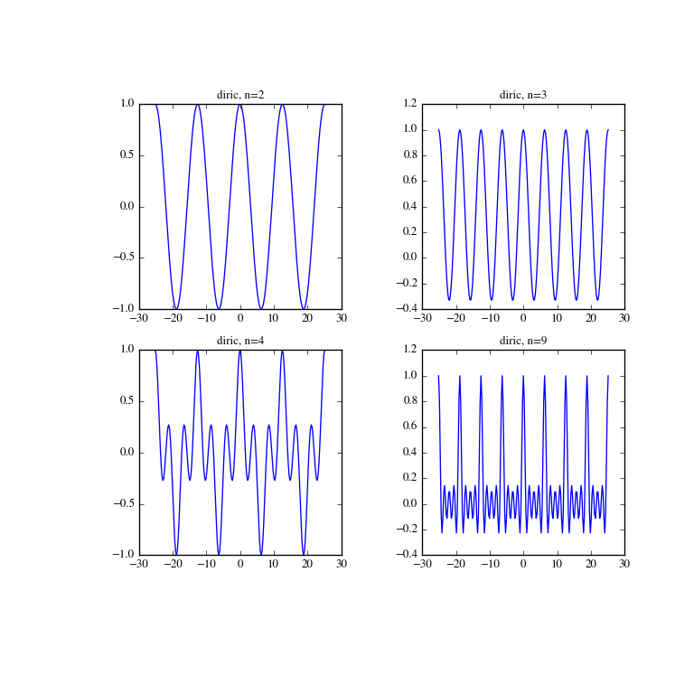

scipy.special.diric¶
- scipy.special.diric(x, n)[source]¶
Return the periodic sinc function, also called the Dirichlet function.
The Dirichlet function is defined as:
diric(x) = sin(x * n/2) / (n * sin(x / 2)),
where n is a positive integer.
Parameters: x : array_like
Input data
n : int
Integer defining the periodicity.
Returns: diric : ndarray
Examples
>>> from scipy import special >>> import matplotlib.pyplot as plt
>>> x = np.linspace(-8*np.pi, 8*np.pi, num=201) >>> plt.figure(figsize=(8,8)); >>> for idx, n in enumerate([2,3,4,9]): ... plt.subplot(2, 2, idx+1) ... plt.plot(x, special.diric(x, n)) ... plt.title('diric, n={}'.format(n)) >>> plt.show()
